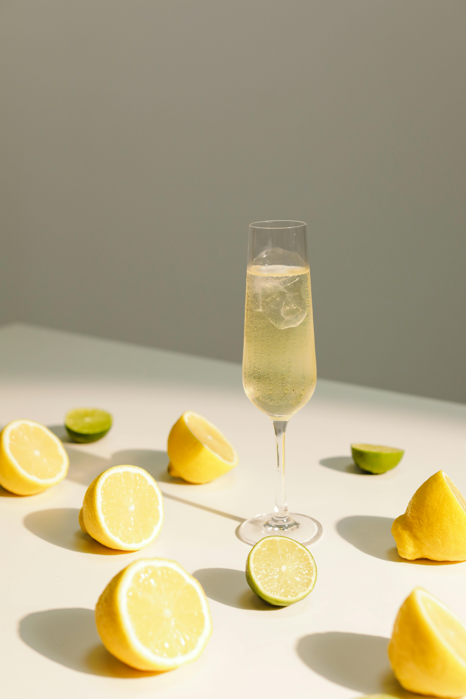

About Me
Hi, I’m Elisheva—a fruit platter designer with a knack for turning everyday fruit into eye-catching, taste-bud-tingling art. I don’t just slice and arrange; I orchestrate color, texture, and flavor into little edible stories that make people stop, smile, and maybe even Instagram first.
Whether it’s a birthday, wedding, holiday, or just because, each platter is crafted with a playful mix of elegance and fun. I balance beauty and flavor, sophistication and whimsy, to make every bite a tiny celebration. My mission? To turn fruit into moments that are as memorable as they are delicious—because life’s too short for boring platters.